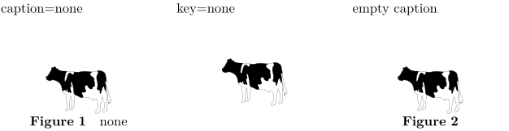

Contents
Summary
The instances of \placefloat are used for placing floating objects.
Instances
| \placechemical | |
| \placefigure | |
| \placetable | |
| \placeintermezzo | |
| \placegraphic |
Settings instance
| \placeFLOAT[...,...][...,...]{...}{...} | |
| [...,...] | split always left right inner outer backspace cutspace inleft inright inmargin leftmargin rightmargin leftedge rightedge innermargin outermargin inneredge outeredge text opposite reset height depth [+-]line halfline grid high low fit 90 180 270 nonumber none local here force margin [+-]hang hanging tall both middle offset top bottom auto page leftpage rightpage somewhere effective header footer tblr lrtb tbrl rltb fxtb btlr lrbt btrl rlbt fxbt fixd |
| [...,...] | reference |
| {...} | text |
| {...} | content |
| Option | Explanation |
|---|---|
| see \placefloat for option values. | |
| optional reference label | |
| caption content | |
Description
With
\placefloat
[location][ref]{caption}{contents
} you can declare that you want to take certain contents, and place them on the page as a (numbered) figure, table, graphic, or intermezzo, or as some other
float
type that you defined using
\definefloat
.
Examples
Example 1
-
% Need to tell ConTeXt where the cow picture is stored \setupexternalfigures[location={local,default}] \startcolumns[n=3] caption=none \placefigure{none}{\externalfigure[cow][height=1cm]} \column key=none \placefigure[none]{}{\externalfigure[cow][height=1cm]} \column empty caption \placefigure{}{\externalfigure[cow][height=1cm]} \stopcolumns
- 
Notes
See also
- completelistoffloats
- placelistoffloats
- startfloattext
- startplacefloat
- \definefloat
- \setupfloat
- strc-flt.mkvi
- \startcombination to place multiple objects together
- \setupcaption to place the caption differently than 'below and centered'.
Help from ConTeXt-Mailinglist/Forum
All issues with:
- \placechemical on the mailing list (all results)
- \placechemical on the mailing list (subject only)
- \placechemical on stack exchange
- \placechemical in ConTeXt's source
- \placefigure on the mailing list (all results)
- \placefigure on the mailing list (subject only)
- \placefigure on stack exchange
- \placefigure in ConTeXt's source
- \placetable on the mailing list (all results)
- \placetable on the mailing list (subject only)
- \placetable on stack exchange
- \placetable in ConTeXt's source